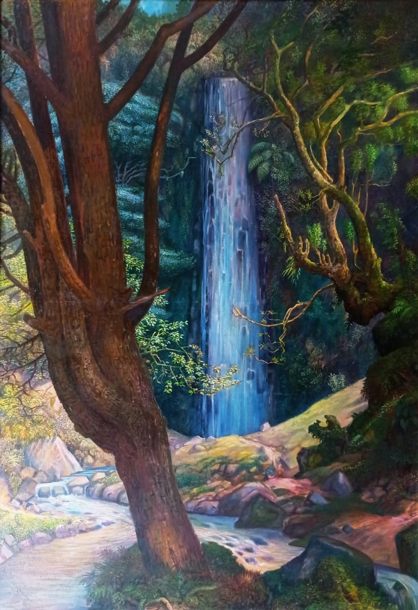
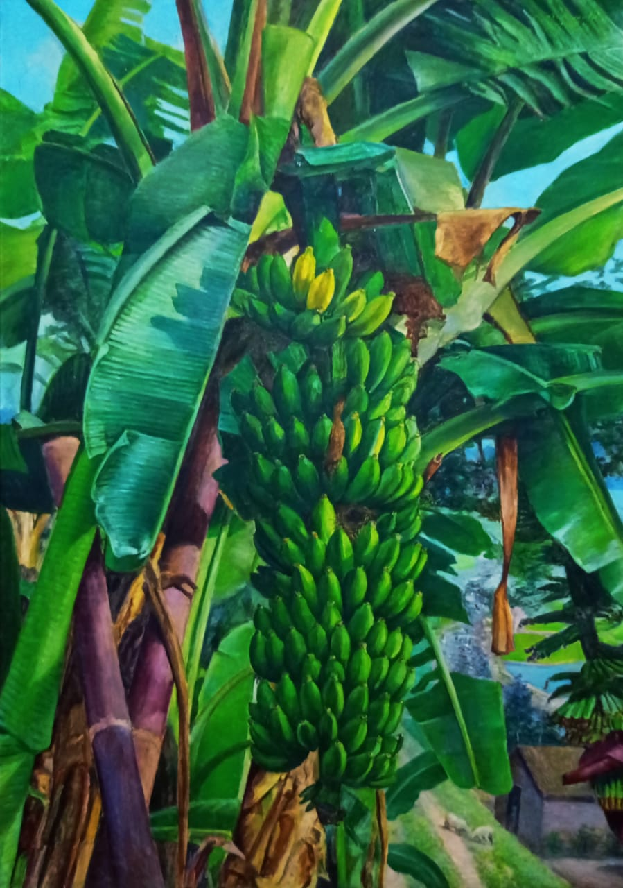
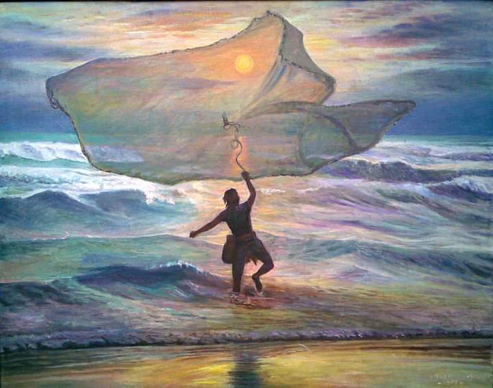
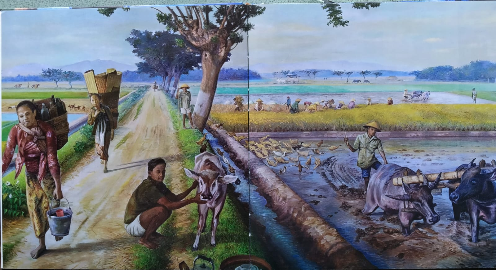
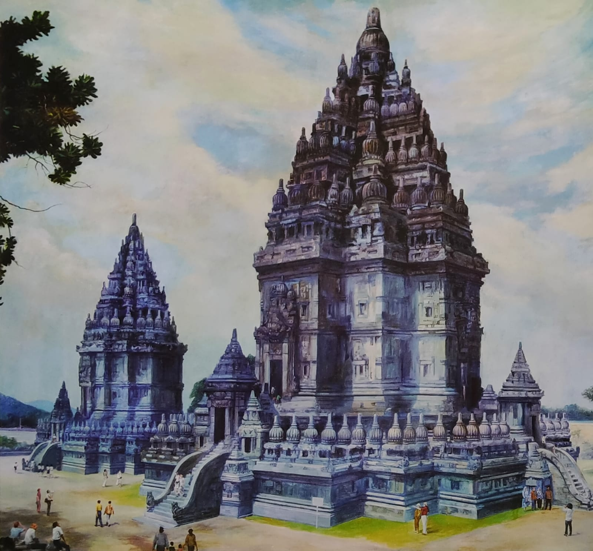
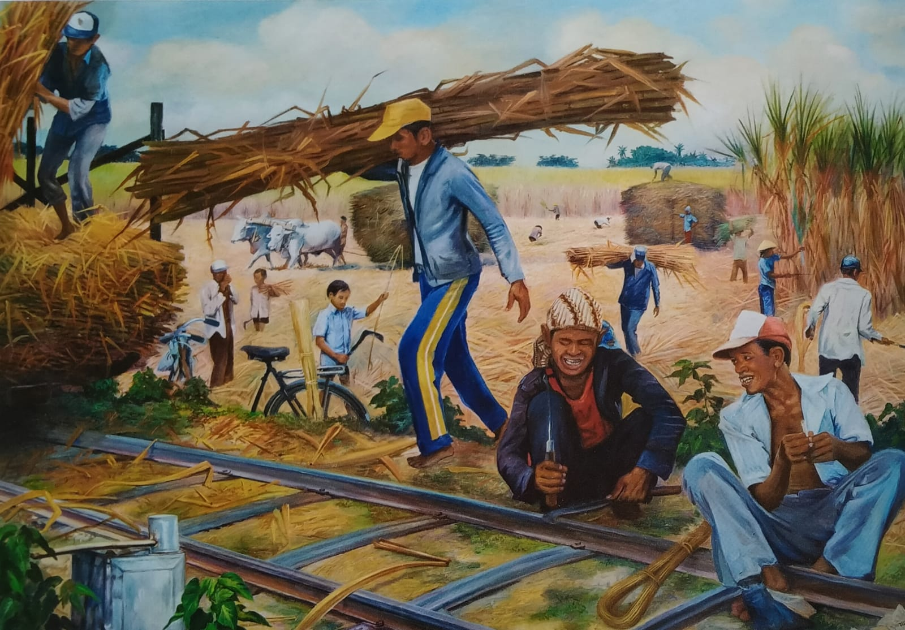
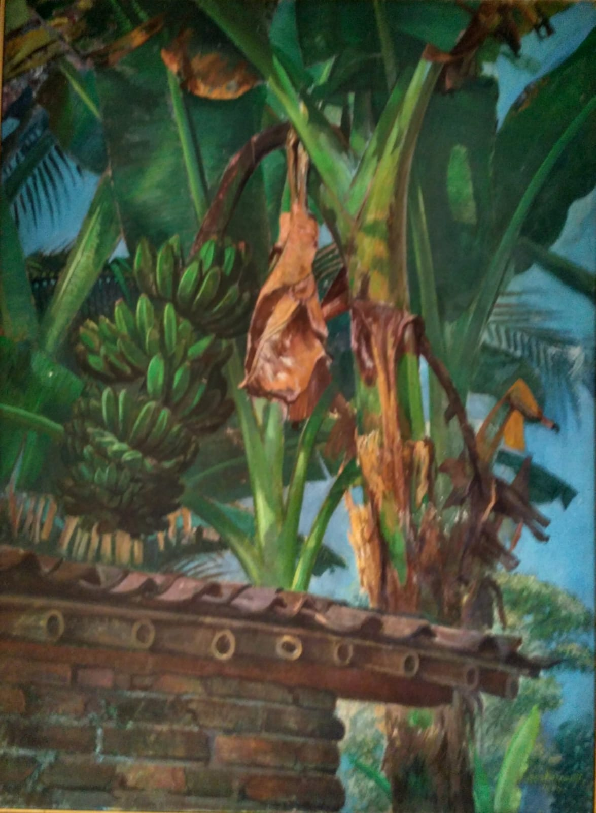
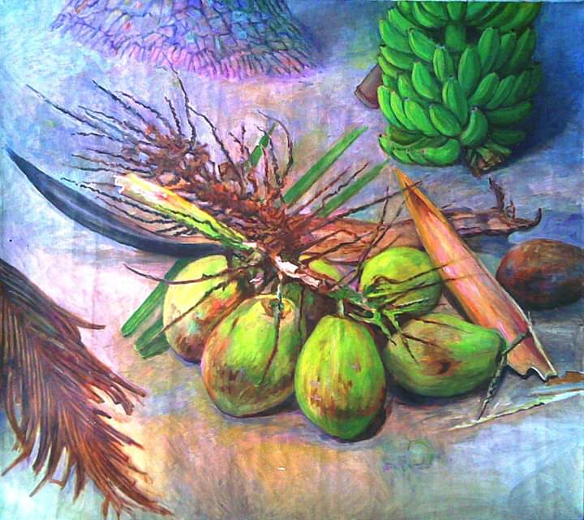
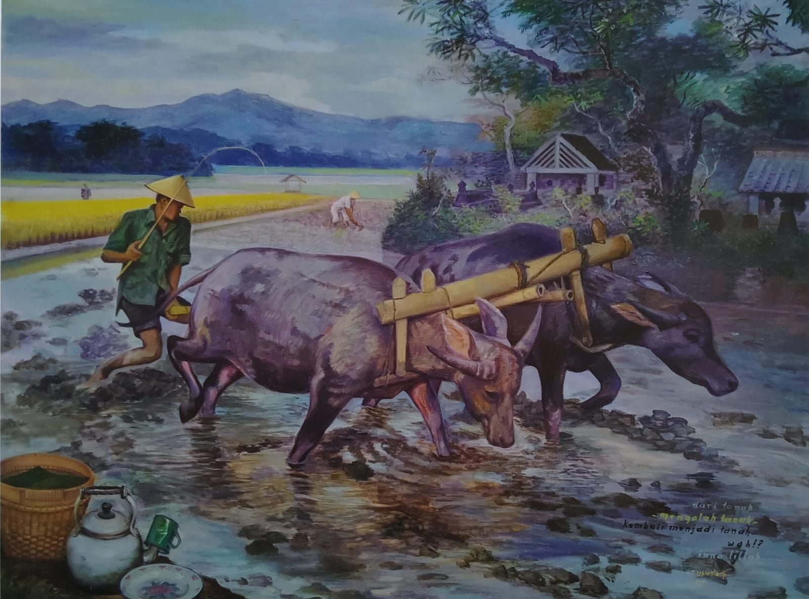
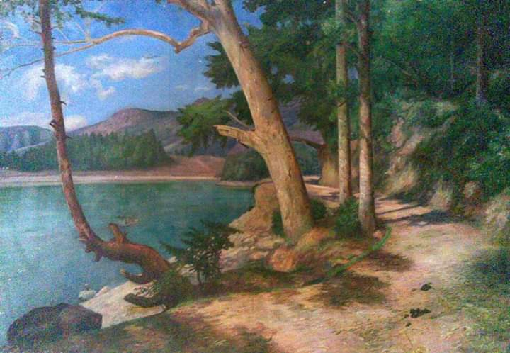

KaryaKu

Air Terjun 1962
144 x 195
Bromo 1993
195 x 195

Pisang
110 x 155
Bunga Bangkai 1994
140 x 200

Menjaring Matahari 1988
100 x 80

Pemandangan Jateng 1982
290 x 140

Menunggui Tukang Patri 1998
98 x 140

Candi Prambanan 1988
170 x 150

Rembang tebu 1987
200 x 140

Pohon Pisang di sudut Rumah 1980
90 x 120

alam benda
100 x 90

Mengolah Tanah 1984
143 x 108

Telaga Sarangan 1961
200 x 140